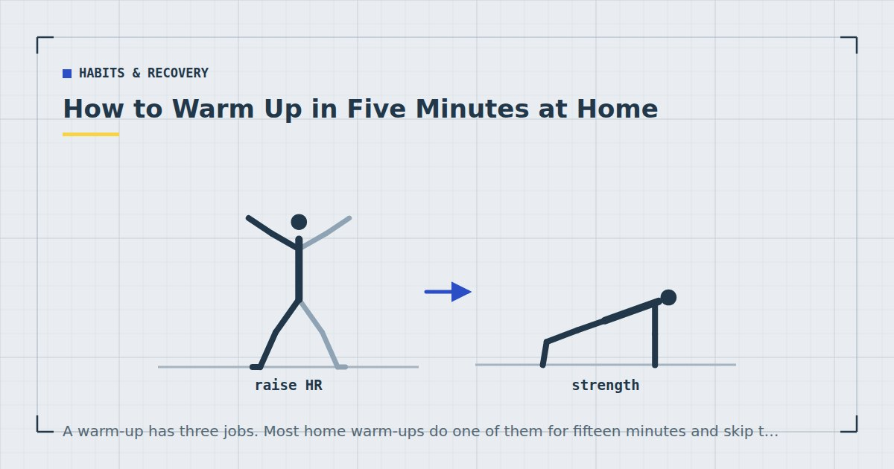

Habits & Recovery
How to Warm Up in Five Minutes at Home
A warm-up has three jobs. Most home warm-ups do one of them for fifteen minutes and skip the one that matters most.

Warm-ups attract two opposite errors: skipping them entirely, and spending a quarter of the session on mobility work before doing any training.
Five minutes covers what a warm-up is actually for. Understanding the three jobs makes it obvious what to include.
What a warm-up is actually for
1. Raising muscle and core temperature. Warmer muscle contracts and relaxes faster and is more compliant. This is the most reliably established benefit and it needs only a few minutes of general movement.
2. Taking the joints through their range. Synovial fluid moves in response to movement rather than in anticipation of it, so a joint that has been still for hours benefits from being moved through its range before being loaded.
3. Rehearsing the specific movements you are about to do. The most important and the most commonly skipped. A general warm-up prepares you generally; a specific one prepares you for the actual exercise.
Note what is not on the list: preventing soreness, which stretching does not do,1 and dramatically reducing injury risk, where the evidence for general warm-ups is more mixed than the confidence with which it is asserted.
The five-minute routine
Unchanging, so it becomes automatic rather than a decision.
March on the spot — 60 seconds
Knees to hip height, arms swinging. Raises temperature and heart rate. This is job one, and sixty seconds is enough.
Arm circles and shoulder rolls — 45 seconds
Ten circles each direction, then ten shoulder rolls back. Job two for the upper body.
Bodyweight squats — 45 seconds
Ten to twelve, going a little deeper each time rather than starting at full depth. Job two for hips, knees and ankles.
Cat–cow or standing spinal rotations — 45 seconds
Ten slow repetitions. Prepares the spine, particularly if you have been sitting.
Leg swings — 45 seconds
Ten forward and back, ten side to side, each leg, holding a wall. Dynamic hip range.
One easy set of your first exercise — 60 seconds
Job three, and the part that matters most. Covered below.
The part almost everyone skips
The final item is the one worth protecting if anything gets cut.
Before your first working set, do one deliberately easy set of that exact exercise. If your session opens with Bulgarian split squats, do six per leg at a comfortable depth with no intention of it being hard. If it opens with push-ups, do six at an easier incline than you will use.
This does two things a general warm-up cannot. It takes the specific joints through the specific range under the specific load pattern you are about to use. And it lets you find out how you feel today before it matters — a stiff shoulder discovered during an easy set is information; discovered during a hard set it is a problem.
For multi-exercise sessions, one easy set of the first exercise is enough. You do not need to warm up each movement separately, because by the time you reach exercise three you have been training for ten minutes.
One easy set of the thing you are about to do beats ten minutes of the thing you are not.
Static stretching before training
Worth addressing because the advice has reversed within most people's lifetimes and plenty of us learned the old version.
Long static holds — thirty seconds or more — performed before training have been associated with small temporary reductions in force production and power. The effects are modest and probably matter more to a sprinter than to someone doing push-ups in a living room.
The practical position: static stretching before training is unlikely to hurt you and is not the best use of your five minutes, because it does not raise temperature and does not rehearse movement. Dynamic movement through range does both. If you want to work on flexibility, do it as a separate session or afterwards — see cool-down stretches.
If you only have ninety seconds
For a fifteen-minute session, five minutes of warm-up is a third of your time. Cut it to ninety seconds:
- 30 seconds marching
- 30 seconds of ten squats, getting deeper
- 30 seconds of one easy set of your first exercise
That is the irreducible version, and it is what the 15-minute full-body workout uses. Cutting it to zero is the one economy that genuinely raises risk, particularly first thing in the morning.
Warming up first thing
Mornings need more, not less.
Overnight the intervertebral discs take on fluid, which is why you are measurably taller in the morning and why the spine feels less willing to bend. Joints have gone hours without loading.
The practical consequence is that early morning is a poor time for maximum-range stretching or heavy loaded spinal flexion, and a good time for gentle repeated movement through a comfortable range. Extend the marching to ninety seconds, add the cat–cow, and go easier on the first working set — the reasoning is in the 10-minute morning workout.
Training in a cold room
Relevant for anyone training in an unheated spare room or a garage in winter, which is a lot of home trainees.
Cold muscle is stiffer and takes longer to reach working temperature, so extend the general portion rather than the specific one. Two to three minutes of marching instead of one, and keep a layer on for the warm-up that you remove once you start working.
This is a genuine consideration rather than fussiness. A warm-up designed for a heated living room is not sufficient in a garage at four degrees, and the first working set is where that shows up.
Adult activity guidance says nothing about warm-ups,2 and no warm-up protocol will make up for a session that is too hard for where you are. But five minutes is a small price for arriving at the first working set prepared rather than finding out mid-set.
Where to go next
For the session structure the warm-up fits into, see how to structure a home workout. For mobility work as a separate session, see the mobility routine for people who sit all day.
Frequently asked questions
How long should a warm-up be?
Five minutes for a thirty-minute session, or ninety seconds for a fifteen-minute one. Spending fifteen minutes warming up before a thirty-minute workout is a mobility session with some training attached.
What should a home workout warm-up include?
Marching to raise temperature, arm circles and leg swings to move the joints through range, gentle squats, and — most importantly — one deliberately easy set of the first exercise you are about to do.
Should I stretch before working out?
Not as your main warm-up. Long static holds before training are associated with small temporary reductions in force production, and stretching does not raise temperature or rehearse movement. Dynamic movement through range does both.
Can I skip the warm-up if I am short on time?
Cut it to ninety seconds rather than to zero: thirty seconds marching, thirty seconds of squats getting progressively deeper, and thirty seconds of one easy set of your first exercise. Skipping entirely is the one economy that genuinely raises risk.
Do I need a longer warm-up in the morning?
Yes, slightly. The spine holds more fluid overnight and joints have gone hours without loading, so extend the general movement portion and avoid aggressive stretching or heavy loaded spinal flexion until you have been moving for a while.
Does warming up prevent injury?
The evidence is more mixed than the confidence with which this is usually asserted. What a warm-up reliably does is raise muscle temperature, move joints through range, and let you find out how you feel today before it matters during a hard set.
Sources and further reading
- Herbert RD, de Noronha M, Kamper SJ. “Stretching to prevent or reduce muscle soreness after exercise.” Cochrane Database of Systematic Reviews, 2011;(7):CD004577. PubMed.
- World Health Organization. WHO Guidelines on Physical Activity and Sedentary Behaviour. 2020.
- NHS. Physical activity guidelines for adults aged 19 to 64.
- MedlinePlus, U.S. National Library of Medicine. Exercise and Physical Fitness.
Comments
Comments are not enabled yet. Add a hosted comment embed (Disqus, Commento, Giscus) inside this container when you are ready.